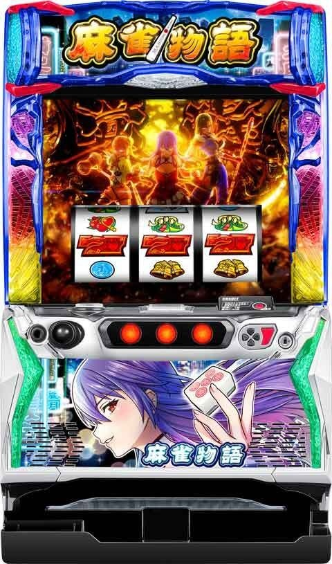
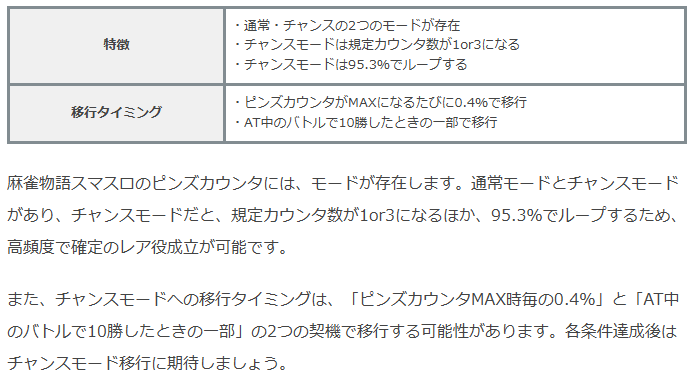
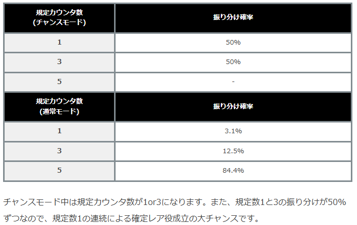
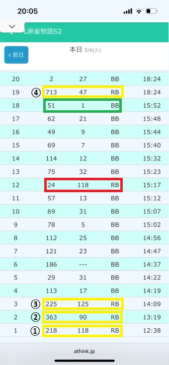
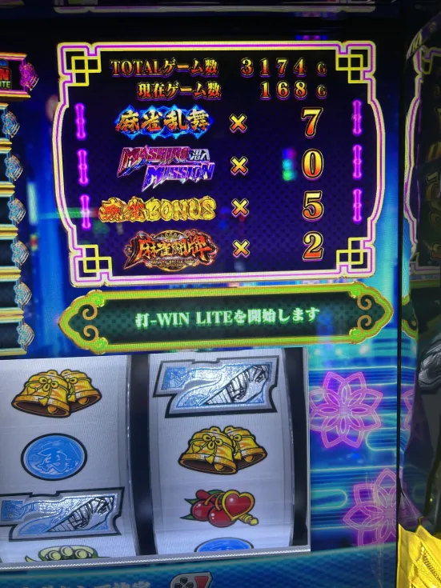
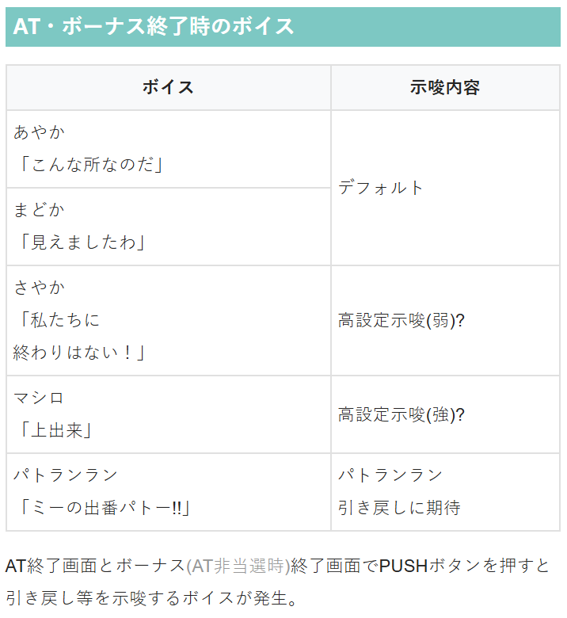
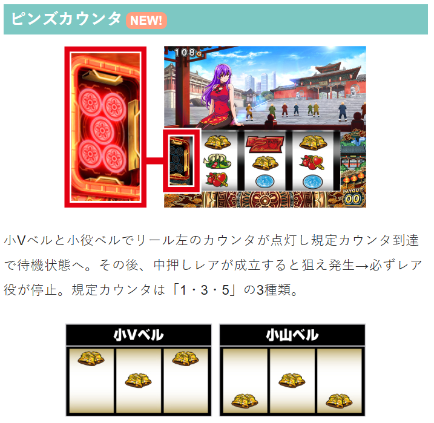
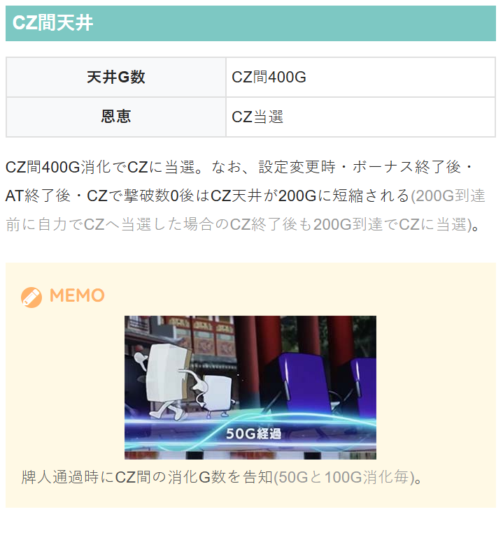

L麻雀物語

【天井情報】
ボーナス間999G AT当選
（699は仮天井となり50.2%でボーナスに当選。）
設定変更時は仮天井が399Gとなり50%でボーナスに当選。最大699GでAT当選となる。
ボーナススルー天井 最大7回目のボーナス AT当選 （7回以外の振り分けもあり、3回目はチャンス。）
CZ間400G CZ当選
設定変更時・ボーナス終了後・AT終了後・CZで撃破数0後はCZ天井が200Gに短縮される
(200G到達前に自力でCZへ当選した場合のCZ終了後も200G到達でCZに当選)
【リセット判別】
リセット時は内部加算あり。前兆ステージ移行ゲーム数がずれる。
【有利区間について】
差枚等で有利区間リセット時は勝利濃厚の煌帝とのバトルに突入。
本機は上位ATの概念がなく基本的には通常ATでつらぬくタイプだが、大量上乗せ時はエンディングが発生。
狙い目
【リセット狙い】
メニューCZ回数0回 150Gからボーナス当選まで
メニューCZ回数1回以上 200Gからボーナス当選まで
【ボーナス間天井狙い】
580Gから
※CZでデータが上がらない。店データ機のG数または液晶左上G数がハマりG数となる。
【ボーナススルー回数天井狙い】
6スルーから
【CZ間天井狙い】
非短縮時 360Gから（目視でCZ非当選区間を確認出来てるなら330Gから）
短縮時 160Gから（目視で短縮区間のCZ非当選確認なら130Gから）
※正確なCZ間ゲーム数は把握出来ない。（左上液晶G数はボーナス間G数）
※牌人通過時にCZ間の消化G数を告知(50Gと100G消化時)、150Gは告知無し。
【ピンズカウンタ狙い】
チャンスモードは単体で打てそう。5ピンが出てくるまで続行？
5ピン 残り1回 ボーダー少し下げる程度。単体では厳しい？
3ピン 残り1回 ピンズカウンタのチャンスモード期待込みで消化。
1ピン チャンスモード期待で消化。5ピン出るまで続行。
強レア役時はしっかり前兆確認？弱レア役時は5-10G程度回して弱そうならやめ。


【300、500高確ゾーン狙い】
290Gまたは490Gから。高確抜けやめ。高確は30G。
ピンズカウンタは通常時1/25で当選。CZ高確中にちょうど溜まって発動が理想。
【有利区間関連狙い】
不明
やめ時
ボーナス、AT後はヤメ。
CZ狙い時は前兆ハズレ後の数G後に前兆発生からCZ当選する事あり？前兆外れても数G回すのが無難？
ヤキトリチャレンジ失敗後は引き戻し確認。高確率でパトランランチャンスに当選？
ただ、AT・ボーナス終了時のボイス「ミーの出番パトー!!」は引き戻し確認した方が良さそう。
※公表値、引き戻し確率8.6％、平均TY800枚。公表値上は示唆無ければ即ヤメが無難と思われる。即前兆の有無は不明。
その他
麻雀物語の履歴の見方
履歴サンプル

黄色枠 通常時のボーナス
赤枠 AT中のボーナス
緑枠 AT終了の履歴（獲得枚数が1枚やマイナスの履歴が出てくる）
メニュー画面

麻雀乱舞、マシロミッションの合計が当日のCZ回数
ボーナス、AT後の天井短縮狙いをする場合
可能な限り、当該でCZ当選してなさそうな台を選んだ方がより確実に天井短縮の恩恵が受けられる。
精度が上がれば余計な通常時を回さないで済むので、以下に履歴とメニュー画面から判断する方法を紹介。
履歴サンプルから最低でも当選しただろうCZ回数を予想（上記サンプル履歴より）
ボーナスとAT後、朝一はCZ間天井200Gに短縮。
①218RB当選 リセの天井短縮または天井直前に1回CZ当選（CZ１回）
②363RB当選 ボナ後天井短縮+1回CZ当選（CZ２回）
③225RB当選 ボナ後天井短縮または天井直前に1回CZ当選（CZ１回）
④713RB当選 AT後天井短縮+CZ間天井 最後は仮天当選？（CZ２回？）
履歴から最低でも6回はCZ当選。④の713RB当選は仮天当選または仮天手前でCZ当選か不明。天井発動には少し早い気も？
メニュー画面のCZ回数は７回。
履歴とメニュー画面から、当該でCZ当選している可能性は低めなのでCZ間天井狙いに適していると思われる。
「最低でも当選したCZ回数」と「メニュー画面のCZ回数」が同じ台の方がより確実。
ただ、CZ非経由でボーナス直撃する事もあるため、100％見抜くのは目視で確認するしかなさそう。
回数が付きすぎると精度が下がっていくので、当日のボーナス回数一桁の台が良さそう。



参考元
ツラヌキメソッド（無料期待値表）
かめとうさぎのパチスロブログ
基本情報
- メーカー: オリンピアエステート
- 機械割: 98.0% 〜 114.6%
- 導入開始日: 2025年04月21日（月）
- ゲーム性概要: ●スマスロで麻雀物語が登場 ●上位ATのない明快なゲーム性！AT突入で期待枚数800枚超！ ●通常時はレア役やゲーム数消化でCZを目指すゲーム性 ●初当りのメインは麻雀ボーナス、消化中にATを抽選 ●ATは純増約3.7枚のゲーム数管理型 ●AT中の天牌激闘に勝利すれば上乗せ以上濃厚


打ち方
打ち方・小役
打ち方（小役狙い）
［最初に狙う絵柄］ 左リール上段付近に赤7or白7を目押し。チェリー以外のこぼしはないので、中＆右リールはフリー打ちでOKだ。

［レア役の停止例］ レア役は1枚。中押しカットイン時はいずれかのレア役濃厚。弱チェリーと弱竹が弱レア役、強チェリー・強竹・チャンス目が強レア役扱いになる。

※チェリーは2種類あるがどちらでもOK
［小山ベルと小Vベル］ 小山ベルと小Vベル停止時はピンズカウンタが加算される。

小山ベル＆小Vベル確率（ピンズカウンタ加算確率）
| 滞在状態 | 確率 |
|---|---|
| 通常時 | 1/25.0 |
| AT中 | 1/13.3 |
ピンズカウンタは通常時よりAT中のほうが貯まりやすくなっている。 特化ゾーン中など、一部状態ではピンズカウンタは加算されないが、小山ベル・小Vベルとしての上乗せ抽選を受けることができる。
変則押しはNG
通常時は左1stでの消化を推奨だ。

解析情報通常時
小役関連
小役確率
| 役 | 確率 |
|---|---|
| リプレイ | 1/7.3 |
| 共通ベル（11枚） | 1/63.5 |
| 左ベル | 1/14.1 |
| 小山ベル | 1/25.0 |
| チャンス目Ａ | 1/819.2 |
| チャンス目Ｂ | 1/819.2 |
| 弱竹 | 1/109.2 |
| 強竹 | 1/819.2 |
| 弱チェリー | 1/90.0 |
| 強チェリー | 1/819.2 |
| レア役合算 | 1/39.8 |
| 小役入賞合算 | 1/3.5 |
※リプレイ・共通ベル以外はすべて1枚
小役確率は全設定共通。
［ピンズカウンタMAX時］中押しレア役確率
| 中押しレア役 | 確率 |
|---|---|
| 中押し→チャンス目 | 1/36.7 |
| 中押し→弱竹 | 1/29.4 |
| 中押し→強竹 | 1/63.8 |
| 中押し→弱チェリー | 1/25.1 |
| 中押し→強チェリー | 1/23.5 |
| 中押し→テンパイ目 | 1/1024.0 |
| 中押しカットイン合算 | 1/6.2 |
※順押し時の小役確率はピンズカウンタ非MAX時と同じ ※天牌激闘や麻雀ラッシュ中もピンズカウンタMAXになるので上表と同じ確率
中押し経由のレア役確率はピンズカウンタをMAXにするゲーム数を加味して1/99.0になる。 AT中は特化ゾーン中など、つねにピンズカウンタがMAX発動する場面があるので、レア役確率も高い。
［黒銀一色or真紅無双中］小役確率
| 役 | 確率 |
|---|---|
| リプレイ | 1/39.8 |
| 共通ベル（11枚） | 1/67.7 |
| 左ベル | － |
| 小山ベル | － |
| チャンス目Ａ | 1/819.2 |
| チャンス目Ｂ | 1/819.2 |
| 弱竹 | 1/109.2 |
| 強竹 | 1/819.2 |
| 弱チェリー | 1/90.0 |
| 強チェリー | 1/819.2 |
| 右下がり7揃いフェイク | 1/18.1 |
| 下段7揃いフェイク | 1/38.6 |
| 右下がり7揃い | 1/15.9 |
| 中段7揃い | 1/8.9 |
| 下段7揃い | 1/6.8 |
| 右押しからの特殊7揃い | 1/1024.0 |
| 狙えカットイン合算 | 1/2.5 |
| 7揃い合算 | 1/3.1 |
※リプレイフラグ・共通ベル以外はすべて1枚
黒銀一色中および真紅無双中は、中押しからのレア役がすべて7揃いフラグとして出現するため中押しからのレア役はない。
CZ当選率
| 役 | 通常滞在時 | 高確滞在時 |
|---|---|---|
| ハズレ | － | 0.8% |
| リプレイ | － | 0.8% |
| ベル | － | 0.8% |
| チャンス目 | 5.1% | 15.6% |
| 弱竹 | 10.2% | 40.2% |
| 強竹 | 40.2% | 75.0% |
| 弱チェリー | － | 1.6% |
| 強チェリー | － | 12.5% |
| テンパイ目 | 100% | 100% |
CZ高確中は竹やチャンス目だけでなく、全役でCZが抽選される。
契機別のCZ当選時の狙え高確率移行率
| CZ当選パターン | 移行率 |
|---|---|
| チャンス目契機のCZ当選 | 25.0% |
| 契機不問かつゲーム数契機の高確率でCZ当選 | 100% |
チャンス目でCZ当選した時の約25%、ゲーム数契機の高確中のCZ当選時は必ず狙え高確へ移行するため、マシロスナイプ経由のAT直行やピンズカウンタ大量ストックなどに期待できる。
CZ本前兆中の上位CZ昇格率
| 役 | 昇格率 |
|---|---|
| 弱レア役 | 5.1% |
| 強レア役 | 25.0% |
| テンパイ目 | 100% |
CZ（麻雀乱舞）本前兆中はレア役で上位CZ（マシロ潜入ミッション）への昇格が抽選される。
内部状態関連
CZ高確

CZ抽選が優遇される高確状態で、移行時は夕方ステージで示唆。移行契機は弱・強チェリーの抽選とゲーム数消化（300Gor500G消化で必ず高確へ）の2系統がある。 チェリー契機は20G、ゲーム数契機は30G継続。ゲーム数契機の高確に関しては、 CZに当選すれば狙え高確率を経由 してCZが告知されるため、マシロスナイプ発生にも期待できる。 ちなみに、通常・高確不問でチャンス目でCZに当選した時の一部でも狙え高確率（32G継続）へ移行する。
CZ高確 性能
| 項目 | 内容 |
|---|---|
| 移行契機 | 弱チェリー・強チェリー時の抽選、 300G・500G到達時 |
| 継続ゲーム数 | チェリー契機：20G、ゲーム数契機：30G |
| 滞在中の特徴 | レア役時のCZ当選率アップ、 ハズレやリプレイ・ベルでもCZを抽選 |
| その他 | ゲーム数契機の高確中はCZ当選で狙え高確率へ移行 |
CZ高確移行率
| 契機 | 移行率 |
|---|---|
| 弱チェリー | 10.2% |
| 強チェリー | 75.0% |
| 300G消化時 | 100% |
| 500G消化時 | 100% |
モード
ピンズカウンタモード
通常時〜AT中共通で、ピンズカウンタを管理する2つのモードが存在。チャンスモードへ移行すれば規定回数5回が選ばれることはないうえ、モードが95.3%でループする。
チャンスモード移行率＆継続率
| 項目 | 抽選値 |
|---|---|
| ピンズカウンタ規定回数到達ごとの移行率 | 0.4% |
| ピンズカウンタ規定回数到達ごとのループ率 | 95.3% |
ピンズカウンタモードごとの規定回数振り分け
| 規定回数 | 通常（非チャンスモード） | チャンスモード |
|---|---|---|
| 1回（一筒） | 3.1% | 50.0% |
| 2回（三筒） | 12.5% | 50.0% |
| 3回（五筒） | 84.4% | 一 |
規定ゲーム数消化
CZ間ゲーム数
通常時は CZ間最大400G消化 でCZに当選。設定変更時、ボーナスやAT終了後はCZ間最大200GでCZに当選する。 なお、ボーナスやAT終了後のCZ間天井（最大200G）はゲーム数で到達するまで有効なので、200G以内に 自力でCZに当選して失敗した場合 でも、CZ終了後の規定ゲーム数は200Gになる（例えば自力で当選したCZが80Gで終了した場合、液晶上は280GがCZ間天井になる）。
［牌人通過でCZ間ゲーム数をお知らせ］ 50・100・200・300・400G消化ごとに牌人が通過してCZ間ゲーム数を教えてくれる。

ピンズカウンタ
ピンズカウンタ解説
小山ベルor小Vベルを引くごとにポイントが加算されていき、 規定回数に達すると中押しカットインの待機状態 に移行する。 規定ポイントは液晶左のピンズ牌で表示されていて、規定回数は1回・３回・５回（一筒・三筒・五筒）の3種類。 中押しカットインフラグが成立（約1/6程度）すると、 中押しカットインが発生してレア役が停止 するシステムだ。 通常時だけでなくAT中も抽選されるため、どこで規定回数に到達するかも重要になる。

ピンズカウンタ性能
| 項目 | 内容 |
|---|---|
| 規定回数 | 1回or3回or5回 |
| 点灯契機 | 小山ベルor小Vベル成立時に1個点灯 ※一部状態を除く |
| 点灯確率 | 通常時：1/25.0、AT中：1/13.3 |
| 恩恵 | 規定回数到達で中押しカットインの待機状態へ移行、 中押しカットイン発生でレア役濃厚 |
［中押しカットイン］ パターンは青と赤の2種類。赤なら強レア役以上の期待大だ。


［停止出目ごとの成立役］

［テンパイ目］

テンパイ目のボーナス直撃当選率
| 役 | 当選率 |
|---|---|
| テンパイ目 | 50.0% |
小山ベルor小Vベル成立時のポイント振り分け
| 獲得 | 振り分け |
|---|---|
| 1pt | 93.8% |
| 2pt | 5.1% |
| 3pt | 0.4% |
| 4pt | 0.4% |
| 5pt | 0.4% |
狙え高確率/マシロスナイプ
狙え高確率解説
チャンス目契機CZ当選時の一部や、ゲーム数消化契機の高確中のCZ当選から移行する「7を狙え」の高確率状態。 マシロスナイプが発生すれば7揃いやマシロック当選のチャンス。狙え高確率はおもにオープンバスステージ移行などで示唆される（オープンバスステージに行かなくても内部的に狙え高確率の場合あり）。 CZ当選時の本前兆ゲーム数がそのまま継続ゲーム数になる（通常時は最大32G継続、AT中は15GのST型）。

狙え高確率中のマシロスナイプ確率
| 滞在状態 | 確率 |
|---|---|
| 通常時 | 1/14.0 |
| AT中 | 1/18.4 |

AT中はリール周囲の文字＆エフェクトで狙え高確率移行を示唆する。
マシロスナイプ解説
マシロスナイプが発生すれば7揃いのチャンスで、7が揃えばAT直行＋特化ゾーン（黒銀一色or真紅無双）へ移行。失敗してもマシロック（ピンズカウンタの高確率状態）移行のチャンスだ。

マシロスナイプ性能
| 項目 | 内容 |
|---|---|
| 発生契機 | 通常時・AT中の抽選 ※狙え高確率中は発生確率アップ |
| 恩恵 | 7揃い時はラインと絵柄の種類で恩恵が変化、 ハズレ時の一部でマシロックへ突入 |
マシロスナイプの恩恵まとめ
| 結果 | 恩恵 |
|---|---|
| 7揃わず（ハズレ） | マシロック移行のチャンス |
| 白7下段揃い（AT中のみ） | 麻雀ボーナス |
| 白7右下がり揃い | 黒銀一色 |
| 赤7揃い | 真紅無双 |
［マシロスナイプの発生タイミング］ スコープが出現すれば発生のチャンス!?

マシロ登場でマシロスナイプ発動だ。

マシロック
マシロック概要
12G継続するピンズカウンタかつ、7揃いの高確率状態（7揃い高確になるのは通常時のみ）で、ベルはフルナビ状態になるので出玉も増える。 規定数まで貯まったピンズカウンタは一旦ストックされ、終了後に放出される。 通常時は突入した時点でCZ濃厚 、消化中に7が揃えばAT＋特化ゾーン濃厚。AT中は上乗せやテンパイバトルに期待できる。

マシロック性能
| 項目 | 内容 |
|---|---|
| 突入契機 | マシロスナイプ失敗時の一部 |
| 継続ゲーム数 | 平均12G |
| 滞在中の抽選 | 高確率でピンズカウンタを加算、 通常時は7揃い確率もアップ |
| 白7右下がり揃い | 黒銀一色 |
| 赤7揃い | 真紅無双 |
マシロック中の7揃い（赤7・白7合算）確率
| 滞在状態 | 確率 |
|---|---|
| 通常時 | 1/127.1 （設定1） |
| AT中 | 1/4345.6 |
［狙えカットイン］ 7が揃えばマシロスナイプと同じ恩恵を獲得できる（白7揃いは黒銀一色、赤7揃いは真紅無双）。7揃いが高確率になるのは通常時のみなので、通常時のマシロック中は叩きどころだ。

麻雀乱舞（CZ）
CZ概要
4GのST型CZで、小役を引けば3G固定の連撃パートに移行して4Gが再セット。連撃パートでは成立役に応じて毎ゲーム敵へのダメージが抽選され、最終的に1000体の敵をすべて撃破できれば麻雀ボーナスに当選する。 1000体撃破できなくても、終了時は撃破数に応じて最終乱舞（ジャッジ演出）でボーナスが抽選される。

麻雀乱舞（CZ）性能
| 項目 | 内容 |
|---|---|
| 突入契機 | レア役時の一部、ゲーム数消化 |
| 継続ゲーム数 | STパートは4G/セット、連撃パートは3G固定 |
| 確率 | 1/203.4 |
| 平均期待度 | 40%以上 |
| STパート中抽選 | 小役成立で敵撃破＋連撃パートへ |
| 連撃パート中抽選 | 成立役に応じて敵撃破（毎ゲーム最低50体） |
| その他 | 敵1000体撃破で麻雀ボーナス、 ST終了時は撃破数に応じて麻雀ボーナスを抽選 |
※マシロ潜入ミッションとの合算確率は1/185.0
［STパート］ 小役入賞で牌人を撃破＋連撃パートへ。

［連撃パート］ 毎ゲーム、最低でも50ダメージ、小役成立時は100ダメージ以上を与える。

［最終乱舞］ 2〜3G継続する最終ジャッジで、タイトルの色で期待度が変化。

ここでボーナスに当選した場合は、終了後の修行ステージを経由して告知されることがあるため、修行ステージを抜けるまでは続行したい。
［対峙中］ （連撃突入契機役） 牌人撃破数振り分け
| 撃破数 | 弱レア役 | 強レア役 | テンパイ目 |
|---|---|---|---|
| 50体 | － | － | － |
| 100体 | 97.7% | － | － |
| 300体 | 1.6% | 96.9% | － |
| 500体 | 0.4% | 1.6% | － |
| 1000体 | 0.4% | 1.6% | 100% |
レア役時は牌人を撃破したうえで連撃へ移行する。
［連撃中］牌人撃破数振り分け
| 撃破数 | ハズレ | ベル | リプレイ |
|---|---|---|---|
| 50体 | 99.6% | － | － |
| 100体 | 0.4% | 99.2% | 99.2% |
| 300体 | － | 0.4% | 0.4% |
| 500体 | － | 0.4% | 0.4% |
| 1000体 | － | － | － |
| 撃破数 | 弱レア役 | 強レア役 | テンパイ目 |
| 50体 | － | － | － |
| 100体 | － | － | － |
| 300体 | 98.0% | － | － |
| 500体 | 1.6% | 98.4% | － |
| 1000体 | 0.4% | 1.6% | 100% |
テンパイ目はどの状況でもボーナス以上濃厚になる。
［最終乱舞］移行時のボーナス当選率 （設定1）
| 撃破数 | 当選率 |
|---|---|
| 0～499体 | 修行ステージへ行けば!? |
| 500～699体 | 21.5% |
| 700～999体 | 41.0% |
最終乱舞移行時に、撃破数を参照して麻雀ボーナスを抽選。高設定ほど期待できる!?
［最終乱舞］消化中の書き換え当選率
| 役 | 当選率 |
|---|---|
| 弱レア役 | 5.1% |
| 強レア役 | 100% |
| テンパイ目 | 100% |
最終乱舞中はレア役で結果の書き換えを抽選。ボーナス非当選時や修行ステージ移行が決まっている場合はボーナス、ボーナス当選時はATへ、ATが当選している場合は天牌激闘のストックを獲得できる。
マシロ潜入ミッション（上位CZ）
上位CZ概要
10G＋α継続する上位CZで、10G間の潜入パートで小役を引けば1〜3Gのミッションへ移行。ミッション中は潜入パートのゲーム数減算がストップして、小役を引くことができれば麻雀ボーナス濃厚。 潜入パートの最終ゲーム（10G目）で小役を引いた場合もボーナス濃厚!?

マシロ潜入ミッション（上位CZ）性能
| 項目 | 内容 |
|---|---|
| 突入契機 | レア役時の一部、ゲーム数消化 |
| 継続ゲーム数 | 潜入パートは10G固定、ミッションは1～3G |
| 確率 | 1/2050.7 |
| 平均期待度 | 70%以上 |
| 潜入パート中抽選 | 小役成立でミッションへ |
| ミッション中抽選 | 小役成立で麻雀ボーナス |
※麻雀乱舞との合算確率は1/185.0
［潜入パート］ 潜入パートは10G間継続して、小役を引けばミッションへ突入する。

［ミッション］ ●黒牌人撃破

●罠解除

●扉開放 実戦上、ミッションは全3種類で、ミッションによって継続ゲーム数が変化（1〜3G）する。

契機役ごとのミッション振り分け
| ミッション | ベル・リプレイ | 弱レア役 | 強レア役 |
|---|---|---|---|
| 1G | 94.5% | 50.0% | － |
| 2G | 5.1% | 46.9% | 75.0% |
| 3G | 0.4% | 3.1% | 25.0% |
※小役成立で必ずミッションに突入
弱レア役時は半分が2G以上のミッションへ、強レア役時は必ず2G以上のミッションへ移行する。
直撃抽選
AT直撃確率
通常時はパトランランチャンスの前兆中（おもにボーナスorAT後の99G間）を除き、毎ゲームAT直撃を抽選。高設定ほど直撃確率は高い。
天井
天井抽選
有利区間移行時とAT終了時にボーナススルー回数天井とゲーム数天井を抽選。ゲーム数天井は麻雀ボーナス終了後にも抽選される。 スルー回数天井は3回目がチャンス、7回目が天井。ゲーム数天井の699Gと999Gは振り分けで決定する。
ゲーム数天井選択率
| 天井 | 選択率 |
|---|---|
| 699G | 50.2% |
| 999G | 49.8% |
※699Gで当選した場合はボーナス濃厚、999Gで当選した場合はAT濃厚＋ロングフリーズ発生のチャンス
［設定変更時の抽選］ 設定変更時は内部的にゲーム数天井を300G〜399G短縮するため、結果的にゲーム数天井が最大399Gor699Gに短縮される。 ちなみにCZ天井も0〜49G短縮しているので、規定ゲーム数のズレで設定変更を完璧に見抜くのは難しい。
フリーズ
ロングフリーズ動画
リールロックを伴って発生するプレミアムフラグ。初期ゲーム数300Gを持って、ATへ直行する。
解析情報ボーナス時
麻雀ボーナス
ボーナス概要
初当り時はATを抽選、AT中はATゲーム数の上乗せを抽選する擬似ボーナス。 AT中に関しては、ボーナス中のゲーム数も規定ゲーム数としてカウントされるため、当選時はゲーム数契機の天牌激闘当選のチャンスにもなる。

開始時に3種類の告知モードを任意に選択することができる。
麻雀ボーナス性能
| 項目 | 内容 |
|---|---|
| 突入契機 | CZ成功、直撃抽選、ゲーム数消化、 マシロスナイプ経由（AT中のみ） |
| 継続ゲーム数 | 25G |
| 純増 | 約3.7枚/G |
| 通常時の抽選 | AT抽選（期待度約50%） |
| AT中の抽選 | ATゲーム数上乗せ抽選 |
| その他 | AT非当選時は99G以内の パトランランチャンス突入に期待 |
※期待度の約50%はスルー回数天井を含んだ数値
AT中の当選は、基本的に狙え高確率経由になるため、終了後は狙え高確率15Gが再セットされる。
麻雀ボーナス確率
| 設定 | 確率 |
|---|---|
| 1 | 1/433.3 |
| 2 | 1/431.8 |
| 3 | 1/426.6 |
| 4 | 1/420.2 |
| 5 | 1/417.9 |
| 6 | 1/416.5 |
［チャンス告知］ 様々な演出でチャンスを告知。7を狙えカットイン成功でAT濃厚となる。

［キュイン告知］ エフェクトの色で期待度を示唆して、最終的にパトランプが出現すれば成功。 エフェクトはそわそわ（青）＜わくわく（緑）＜どきどき（赤）の順でチャンスだ。

［初代告知］ 消化中は成立役に応じて4つの保留を強化。ラスト4Gでは保留を使ったリーチ演出で成否が告知される。

初当りボーナス中のAT当選率
| 役 | 当選率 |
|---|---|
| ハズレ | 1.2% |
| ベル・リプレイ | 1.6% |
| 弱レア役 | 12.5% |
| 強レア役 | 50.0% |
| テンパイ目 | 100% |
初当りボーナス中は全役でATを抽選。強レア役は50%でATに当選するため大チャンスだ。
初当りボーナス終了後のパトランランチャンス当選率
| 契機 | 当選率 |
|---|---|
| AT非当選のボーナス終了後 | 8.6% |
ボーナス当選契機不問で、終了後は8.6%でパトランランチャンスに当選。当選時は最大99Gの前兆を経てパトランランチャンスに突入する。 99G間にパトランランが登場するほどチャンス。10回登場すればパトランランチャンス濃厚だ。
超麻雀ボーナス
レア役以外での上乗せ当選率がアップした超麻雀ボーナスも存在。麻雀ボーナス当選時の一部で当選する可能性がある。


［AT中］ボーナス中のゲーム数上乗せ当選率
| 役 | 当選率 |
|---|---|
| ハズレ | 0.4% |
| ベル・リプレイ | 0.4% |
| 弱レア役 | 5.1% |
| 強レア役 | 25.0% |
| テンパイ目 | 100% |
ゲーム数上乗せ当選時の上乗せゲーム数振り分け
| 上乗せ | 振り分け |
|---|---|
| ＋30G | 94.0% |
| ＋50G | 5.0% |
| ＋100G | 0.9% |
| ＋200G | 0.1% |
契機役で当選率は変化するが、上乗せされるゲーム数は契機不問で振り分けられる。
通常時・AT中共通
共通要素
通常時との共通要素リンク先
ピンズカウンタ
狙え高確率
マシロスナイプ
マシロック
麻雀ボーナス
ピンズカウンタの貯まる確率など若干の違いはあるが、システムは共通だ。
麻雀闘牌（AT）
AT概要
ゲーム数管理型のATで、消化中はレア役でゲーム数上乗せや天牌激闘を抽選、天牌激闘はゲーム数消化でも抽選される。 AT開始時は「詮議の刻」で対戦相手を決定。天牌激闘で対戦相手に勝利すればゲーム数上乗せ以上濃厚かつ、再度詮議の刻で対戦相手を決定する。

ゲーム数を使い切っても、継続をかけた3G間の「ラストジャッジ」が発生するため、継続に期待できる。
麻雀闘牌（AT）性能
| 項目 | 内容 |
|---|---|
| 突入契機 | ボーナス中の抽選、直撃抽選、ゲーム数消化、 マシロスナイプ経由 |
| 継続ゲーム数 | 50G＋α |
| 純増 | 約3.7枚/G |
| 消化中の抽選 | レア役でゲーム数上乗せと天牌激闘をW抽選、 ゲーム数消化で天牌激闘を抽選 |
| その他 | 最終ゲームはヤキトリチャレンジ抽選あり、 終了後は99G以内のパトランランチャンス突入に期待 |
AT中の規定ゲーム数
| ゲーム数 | 詳細 |
|---|---|
| 30G | 天牌激闘当選のチャンス、 初回は60G以内に天牌激闘当選 |
| 60G | 天牌激闘当選のチャンス、 初回は60G以内に天牌激闘当選 |
| 100G | 到達時は天牌激闘濃厚 |
AT初回は30Gor60Gで天牌激闘に突入するため、まずは60G継続させるのが目標となる。
［詮議の刻］ 詮議の刻は5G間継続。敵によって天牌激闘時の勝率や弱点役が変化。 最大5戦で、5戦目は勝利＝特化ゾーン濃厚となる「煌帝」が出現する。

一度倒したキャラは煌帝を倒すまで復活しない。一度煌帝を倒した後は、各キャラを倒しても消えることはなくランダムで出現（例：青龍を倒した後も青龍が選ばれる可能性あり）。ただし、同じキャラが連続で選ばれる割合は低くなっているようだ。
［対戦相手］

AT中の対戦相手
| 対戦相手 | 詳細 |
|---|---|
| 青龍 | 天牌激闘・ラストジャッジ勝利期待度はイマイチ ★弱点役：チャンス目 |
| 玄武 | ラストジャッジの勝利期待度が高い ★弱点役：弱竹・強竹 |
| 朱雀 | 天牌激闘当選の勝利期待度が高い ★弱点役：弱チェリー・強チェリー |
| 白虎 | 天牌激闘・ラストジャッジの勝利期待度が高い ★弱点役：全レア役 |
| 煌帝 | 勝利すれば覚醒＋麻雀ラッシュ以上濃厚 （覚醒が天和からスタート） |
弱点の強レア役は勝利かつ覚醒移行濃厚になる。
［規定ゲーム数消化］ 規定ゲーム数消化時はリール下部のセット数＆ゲーム数表示部分がCHANCE文字に変化。文字の色は複数あり、赤や紫なら大チャンス!?

［ラストジャッジ］ ここで勝利できれば必ず報酬上乗せゾーンの「覚醒」に移行するため、特化ゾーン当選にも期待できる。

ゲーム数上乗せ抽選
ゲーム数上乗せ当選時は、まずマシロインパクト（上乗せ50G以上のフリーズ）の当否を抽選。そのあとに契機役に応じた上乗せゲーム数が抽選される。

［特殊な上乗せ］ ゲーム数上乗せ時に半端なゲーム数（例：58G、155Gなど）が表示されると大量ゲーム数上乗せのチャンス。発生率は上乗せ時の約1.6%だ。
ゲーム数上乗せ当選率
| 役 | 当選率 |
|---|---|
| チャンス目 | 27.3% |
| 弱竹 | 0.8% |
| 強竹 | 1.6% |
| 弱チェリー | 3.9% |
| 強チェリー | 75.0% |
| テンパイ目 | 89.8% |
まだ、上記表の段階では上乗せゲーム数は決まっておらず、マシロインパクトの当否を抽選してからゲーム数を決定。 テンパイ目は上乗せの期待大かつマシロインパクトのチャンス、上乗せ非当選でも天牌激闘濃厚だ。
ゲーム数上乗せ当選時のマシロインパクト当選率
| 当選契機 | 当選率 |
|---|---|
| チャンス目 | 0.8% |
| 弱竹 | 14.8% |
| 強竹 | 14.8% |
| 弱チェリー | 0.8% |
| 強チェリー | 0.8% |
| テンパイ目 | 26.2% |
マシロインパクト当選時の上乗せゲーム数振り分け
| 上乗せ | 契機不問 |
|---|---|
| ＋10G | － |
| ＋20G | － |
| ＋30G | － |
| ＋50G | 71.0% |
| ＋100G | 28.5% |
| ＋200G | 0.5% |
マシロインパクト非当選時の上乗せゲーム数振り分け
| 上乗せ | チャンス目 | 弱竹 | 強竹 |
|---|---|---|---|
| ＋10G | 60.0% | － | － |
| ＋20G | 17.5% | － | － |
| ＋30G | 17.0% | 75.0% | 75.0% |
| ＋50G | 4.2% | 19.5% | 19.5% |
| ＋100G | 1.0% | 5.0% | 5.0% |
| ＋200G | 0.3% | 0.5% | 0.5% |
| 上乗せ | 弱チェリー | 強チェリー | テンパイ目 |
| ＋10G | 45.3% | 43.3% | － |
| ＋20G | 26.0% | 9.0% | － |
| ＋30G | 20.0% | 39.0% | 55.0% |
| ＋50G | 7.0% | 7.0% | 39.5% |
| ＋100G | 1.5% | 1.5% | 5.0% |
| ＋200G | 0.2% | 0.2% | 0.5% |
［マシロインパクト］ AT中のマシロインパクトは＋50G以上濃厚。 弱竹・強竹はどちらも天牌激闘当選がメインなのでゲーム数上乗せ当選率は低めだが、上乗せ当選時はマシロインパクトのチャンス、ゲーム数上乗せのみだった場合でも＋30G以上濃厚になる。

［レア役］天牌激闘当選率
| 当選契機 | 当選率 |
|---|---|
| チャンス目 | － |
| 弱竹 | 25.0% |
| 強竹 | 75.0% |
| 弱チェリー | － |
| 強チェリー | 10.2% |
| テンパイ目 | 100% |
当選のメインは竹系。チェリー系はゲーム数上乗せがメイン。 レア役で当選した場合でも規定ゲーム数はリセットされる。
［規定ゲーム数］天牌激闘当選率 （振り分け）
| 当選契機 | 初回 | バトル敗北後 | バトル勝利後 |
|---|---|---|---|
| 30G | 35.2% | 10.2% | 10.2% |
| 60G | 64.8% | 44.9% | 22.7% |
| 100G | － | 44.9% | 67.2% |
ゲーム数消化の本前兆中のレア役も非前兆中と同じ数値で天牌激闘ストックを抽選する。
狙え高確率関連の抽選
チャンス目はほかのレア役と異なり、天牌激闘を抽選しない分、ゲーム数上乗せだけでなく狙え高確率を抽選。当選時は15G間の狙え高確率へ移行する。

狙え高確率移行率
| 役 | 当選率 |
|---|---|
| チャンス目 | 25.0% |
狙え高確率中もチャンス目で狙え高確率を抽選（抽選値は非高確率中と同じ）。当選した場合は狙え高確率15Gが再セットされる。
狙え高確率中のマシロスナイプ発生確率
| 恩恵 | 確率 |
|---|---|
| フェイク（ハズレ） | 1/43.4 |
| マシロック | 1/200.4 |
| 7揃い合算 （ボーナスor黒銀一色or真紅無双） | 1/38.0 |
| トータルのマシロスナイプ確率 | 1/18.4 |
| マシロック以上の確率 | 1/32.0 |
狙え高確率中は1/18.4でマシロスナイプが発生。マシロスナイプが発生した時点でのマシロック以上期待度は約57%だ。
ラストジャッジの抽選
ラストジャッジは、内部的なポイントに応じて突入時に勝利を抽選する仕組みで、ポイントが多いほど勝利期待度が高く、玄武・白虎・煌帝は必ず3ptが加算されるため、勝利期待度が高い。 対戦相手以外では、現在の対戦相手に天牌激闘で何連続で負けているか（負けている回数がそのままポイントに換算）、一度でも天牌激闘に勝利しているか（0勝なら＋1pt）でポイントが加算される。

例）AT初回の対戦相手が玄武で、同セット内の天牌激闘で2回敗北…というケースなら3pt（玄武）＋2pt（2敗）＋1pt（天牌激闘未勝利）になって、計6ptで抽選
ラストジャッジの期待度
| 対戦相手 | 期待度 |
|---|---|
| 青龍 | 18.0% |
| 玄武 | 48.0% |
| 朱雀 | 17.0% |
| 白虎 | 40.0% |
| 煌帝 | 40.0% |
| トータル | 約30% |
対戦相手や継続セット数を平均するとトータル期待度は約30%だ。
［開始時の抽選に漏れても書き換えを抽選］ 開始時のポイントによる抽選に漏れた場合でも、レア役で勝利書き換えを抽選。弱レア役なら期待度25%、強レア役は勝利書き換え濃厚になる。
［ループの打牌抽選に受かれば90%継続に！］ ラストジャッジ勝利時は約0.4%と低い割合だが、以降のラストジャッジがすべて7pt固定（継続率90.2%）になる「ループの打牌抽選」がおこなわれる。
ラストジャッジのポイント加算契機
| 契機 | 加算ポイント |
|---|---|
| 対戦相手が玄武or白虎or煌帝 | 3pt |
| 上記以外の対戦相手 | 0pt |
| 同セットでの天牌激闘連続敗北回数 | 敗北回数＝加算ポイント |
| AT開始から天牌激闘未勝利 | 1pt |
ラストジャッジ開始時の勝利当選率
| 所持ポイント | 当選率 |
|---|---|
| 0pt | 1.6% |
| 1pt | 10.2% |
| 2pt | 20.3% |
| 3pt | 30.1% |
| 4pt | 40.2% |
| 5pt | 50.0% |
| 6pt | 75.0% |
| 7pt | 90.2% |
ラストジャッジ中の勝利書き換え当選率
| 役 | 当選率 |
|---|---|
| 弱レア役 | 25.0% |
| 強レア役 | 100% |
| テンパイ目 | 100% |
ループの打牌抽選当選率
| 契機 | 当選率 |
|---|---|
| ラストジャッジ勝利時 | 0.4% |
天牌激闘/覚醒
天牌激闘概要
レア役やゲーム数消化で抽選されるバトルで、勝利すればゲーム数上乗せ以上（最低30G）濃厚。上乗せ以上獲得後は再び詮議の刻で対戦相手を決めてATがスタートする。 消化中はレア役確率が約1/5.4と大幅にアップ（ピンズカウンタが常時点灯）していて、対戦相手ごとに設定されている 「弱点の強レア役」で撃破できれば必ず「覚醒」に移行 して、報酬をランクアップさせることが可能だ。

天牌激闘 性能
| 項目 | 内容 |
|---|---|
| 突入契機 | レア役時の抽選、規定ゲーム数消化 |
| 確率 | 平均1/70.0 |
| 継続ゲーム数 | 10G＋α |
| 平均勝利期待度 | 約51% |
| レア役確率 | 1/5.4 |
| 消化中の抽選 | 成立役の応じて勝利抽選、 弱点の強レア役は勝利＋覚醒濃厚 |
| その他 | バトル中はATゲーム数の減算がストップ |
対戦相手別DATA
| 対戦相手 | 出現割合 | 勝率 | 勝利時の 覚醒移行率 |
|---|---|---|---|
| 青龍 | 26.8% | 40.0% | 87.0% |
| 玄武 | 26.6% | 40.0% | 66.0% |
| 朱雀 | 27.0% | 53.0% | 77.0% |
| 白虎 | 14.1% | 75.0% | 82.0% |
| 煌帝 | 5.5% | 84.0% | 100% |
※出現割合は内部的な煌帝を含むトータル値 ※煌帝の勝率は設定1の数値
煌帝のトータル出現確率
エンディング移行後も必ず煌帝が登場する。
［液晶下部に弱点役が表示］ 対戦相手ごとの弱点役は液晶下部に表示。ちなみに背景の色は対戦相手に応じて変化する。

［煌帝とのバトル］ AT開始後、5戦目以内に登場する対戦相手で、勝利すれば覚醒濃厚かつ報酬が麻雀ラッシュ以上になる。

［武器破壊］ 弱点以外の強レア役を引いた場合は武器破壊を抽選。当選すれば すべての強レア役が弱点役 になる。 通常の弱点役と同じく、追加された弱点強レア役は勝利後の覚醒中も有効なので、武器破壊経由で覚醒へ移行すれば青龍や玄武、朱雀でも白虎と同等の恩恵を受けることができる。

［残り？？Gの海底抽選］ 残り？？Gの状態に移行して、小役以外（ハズレ）を引くと終了のピンチ。 この状態で勝利した場合、海底抽選がおこなわれ、 当選すれば10G＋αの覚醒 に移行。河底撈魚の1翻が加算された状態でスタートするうえ、ゲーム数も多い（通常の覚醒は5G＋α）ので、通常の覚醒より役満以上を狙いやすくなる。
覚醒概要
天牌激闘勝利時の一部で移行する報酬ランクアップゾーン。毎ゲーム翻数アップを抽選していて、最終的に翻数に応じた恩恵を獲得する。天牌激闘の対戦相手の弱点強レア役はここでも有効で、引くことができれば翻数大幅アップに期待できる。 弱点強レア役は液晶上部に表示。天牌激闘中と同じく、ピンズカウンタMAX状態なので、1/6.2で中押しレア役が出現する。

覚醒 性能
| 項目 | 内容 |
|---|---|
| 突入契機 | 天牌激闘勝利時の一部 |
| 継続ゲーム数 | 5G＋α |
| 消化中の抽選 | 成立役に応じて翻数アップ抽選、 弱点役は半数大幅アップのチャンス |
| その他 | レア役超高確率状態 |
トータル翻数ごとの恩恵
| 翻数 | 恩恵 |
|---|---|
| 12翻以下 | ゲーム数上乗せ（翻数が多いほど期待できる） |
| 13～25翻 | 麻雀ラッシュ（役満） |
| 26～38翻 | 黒銀一色（ダブル役満） |
| 39翻以上 | 真紅無双（トリプル役満） |
［翻数アップ］ 麻雀の役に応じた翻数がアップする。

［裏ドラ発生で翻数大幅アップ］

［ラストの恩恵を告知］ 加算した翻数の合計に応じた恩恵が告知される。

［天牌激闘］中押しレア役確率
※順押し時の小役確率は通常時と同じ
消化中はピンズカウンタMAX状態になるので、レア役確率が大幅にアップする。
対戦相手別の勝利当選率
| 役 | 青龍 | 玄武 | 朱雀 | 白虎or煌帝 |
|---|---|---|---|---|
| チャンス目 | 100% | 5.1% | 5.1% | 100% |
| 弱竹 | 0.4% | 25.0% | 0.4% | 25.0% |
| 強竹 | 5.1% | 100% | 5.1% | 100% |
| 弱チェリー | 0.4% | 0.4% | 25.0% | 25.0% |
| 強チェリー | 5.1% | 5.1% | 100% | 100% |
| テンパイ目 | 100% | 100% | 100% | 100% |
弱点の強レア役は勝利＋覚醒濃厚。煌帝は白虎と同じく全レア役がチャンスになる。 煌帝に勝利すれば勝利契機役不問で、役満以上濃厚（天和スタート）の覚醒へ移行する。
武器破壊当選率
| 役 | 当選率 |
|---|---|
| 青龍・玄武・朱雀時の非弱点の強レア役 | 50.0% |
海底当選率
| 契機 | 当選率 |
|---|---|
| 残り？？Gでの勝利時 | 12.5% |
海底は残り？？Gの間でのみ抽選される。
成立役別の翻数振り分け 青龍or朱雀or玄武→勝利後（武器破壊なし）
| 翻数 | その他 | 弱レア役 | 非弱点の 強レア役 | 弱点の 強レア役 |
|---|---|---|---|---|
| 1翻 | 100% | 21.7% | － | － |
| 2翻 | － | 70.0% | 19.8% | 14.4% |
| 3翻 | － | 1.0% | 72.0% | 44.1% |
| 4翻 | － | 1.0% | 0.1% | 0.1% |
| 5翻 | － | 3.9% | 1.0% | 1.0% |
| 6翻 | － | 0.5% | 3.8% | 3.1% |
| 7翻 | － | 0.2% | 1.0% | 1.0% |
| 8翻 | － | 0.2% | 0.2% | 1.0% |
| 9翻 | － | 0.1% | 0.2% | 1.0% |
| 10翻 | － | 0.1% | 0.2% | 1.0% |
| 11翻 | － | 0.1% | 0.2% | 1.0% |
| 12翻 | － | 0.1% | 0.1% | 1.0% |
| 13翻以上 | － | 1.3% | 1.4% | 31.4% |
武器破壊後or白虎or煌帝→勝利後
| 翻数 | その他 | 弱レア役 | 非弱点の 強レア役 | 弱点の 強レア役 |
|---|---|---|---|---|
| 1翻 | 100% | 21.7% | 存在 しない | － |
| 2翻 | － | 70.0% | 存在 しない | 12.7% |
| 3翻 | － | 1.0% | 存在 しない | 42.5% |
| 4翻 | － | 1.0% | 存在 しない | 0.1% |
| 5翻 | － | 3.9% | 存在 しない | 0.3% |
| 6翻 | － | 0.5% | 存在 しない | 2.3% |
| 7翻 | － | 0.2% | 存在 しない | 0.1% |
| 8翻 | － | 0.2% | 存在 しない | 0.1% |
| 9翻 | － | 0.1% | 存在 しない | 0.1% |
| 10翻 | － | 0.1% | 存在 しない | 0.1% |
| 11翻 | － | 0.1% | 存在 しない | 0.1% |
| 12翻 | － | 0.1% | 存在 しない | 0.1% |
| 13翻以上 | － | 1.3% | 存在 しない | 41.5% |
レア役以外は1翻濃厚、弱レア役は弱点・非弱点不問で撃破した対戦相手共通の抽選値になる。 弱点の強レア役は30%以上で役満（13翻以上）が選ばれるので、いかに強レア役を引けるかが重要。 武器破壊経由なら朱雀以下でも白虎と同様の抽選を受けることが可能だ。 煌帝は開始時に必ず天和（役満）を上がるので、13翻が加算された状態でスタートする。
特化ゾーン
麻雀ラッシュ
シリーズおなじみのゲーム数上乗せ特化ゾーンで、毎ゲーム成立役に応じてゲーム数を上乗せしていく。消化中はピンズカウンタMAX状態なので、1/5.4でレア役が成立する。

麻雀ラッシュ性能
| 項目 | 内容 |
|---|---|
| 突入契機 | 覚醒の13～25翻 |
| 継続ゲーム数 | 4G/セット |
| 消化中の抽選 | 成立役に応じてATゲーム数を上乗せ |
| 平均上乗せ | 約80G |
| その他 | レア役超高確率状態 |
［キャラの種類とエフェクトに注目］ レバーON時の登場キャラとエフェクト（カットインの線の色）で上乗せされるゲーム数期待度が変化する。

［ダジャレの役告知も健在］ 翻数が多い役ほど上乗せ枚数もアップする。

黒銀一色
2番目に強力なゲーム数上乗せ特化ゾーンで、消化中は高確率で白7が揃う。

黒銀一色 性能
| 項目 | 内容 |
|---|---|
| 突入契機 | 覚醒の26～38翻、マシロスナイプの白7揃い ※通常時はマシロック中の白7揃いでも突入 |
| 継続ゲーム数 | 5G＋α |
| 消化中の抽選 | 白7揃い・レア役でATゲーム数を上乗せ |
| 最低保証 | 白7揃い1回（＋30G以上） |
| 1契機の上乗せ | 10～300G |
| 平均上乗せ | 約185G |
［白7揃いが上乗せのメイン契機］ 白7揃いやレア役は上乗せ濃厚。狙えカットインはキャラの種類にも注目だ。

［上乗せ後はマシロインパクトに期待！］ 上乗せの次ゲームでマシロインパクト（フリーズ）が発生すれば3桁上乗せ濃厚になる。

［レア役で転落なし状態移行を抽選］ レア役はゲーム数上乗せ濃厚となるだけでなく、3G間の「転落なし状態」への移行を抽選。強レア役時は約50%で移行する。
真紅無双
高確率で赤7が揃う最強のゲーム数上乗せ特化ゾーンだ。

真紅無双 性能
| 項目 | 内容 |
|---|---|
| 突入契機 | 覚醒の39翻以上、マシロスナイプの赤7揃い ※通常時はマシロック中の赤7揃いでも突入 |
| 継続ゲーム数 | 5G＋α |
| 消化中の抽選 | 赤7揃い・レア役でATゲーム数を上乗せ |
| 最低保証 | 赤7揃い1回（＋50G以上） |
| 平均上乗せ | 約378G |
| 突入時の期待枚数 | 約3400枚 |
［赤7揃いが上乗せのメイン契機］ オーラの色にも注目！

［マシロインパクトもあり！］ マシロインパクト（フリーズ）が発生すれば3桁上乗せ濃厚だ。
［レア役で転落なし状態移行を抽選］ 黒銀一色と同じく、レア役はゲーム数上乗せ濃厚濃厚かつ、3G間の「転落なし状態」への移行を抽選する。
［麻雀ラッシュ］小役確率
| 役 | 確率 |
|---|---|
| リプレイ | 1/7.3 |
| 共通ベル（11枚） | 1/63.5 |
| 左ベル | 1/14.1 |
| 小山ベル | 1/25.0 |
| チャンス目Ａ | 1/819.2 |
| チャンス目Ｂ | 1/819.2 |
| 弱竹 | 1/109.2 |
| 強竹 | 1/819.2 |
| 弱チェリー | 1/90.0 |
| 強チェリー | 1/819.2 |
| 中押し→チャンス目 | 1/36.7 |
| 中押し→弱竹 | 1/29.4 |
| 中押し→強竹 | 1/63.8 |
| 中押し→弱チェリー | 1/25.1 |
| 中押し→強チェリー | 1/23.5 |
| 中押し→テンパイ目 | 1/1024.0 |
| 中押しカットイン合算 | 1/6.2 |
麻雀ラッシュ中はピンズカウンタMAX時と同じ確率になる。
［黒銀一色or真紅無双中］小役確率
| 役 | 確率 |
|---|---|
| リプレイ | 1/39.8 |
| 共通ベル（11枚） | 1/67.7 |
| 左ベル | － |
| 小山ベル/小Vベル | － |
| チャンス目Ａ | 1/819.2 |
| チャンス目Ｂ | 1/819.2 |
| 弱竹 | 1/109.2 |
| 強竹 | 1/819.2 |
| 弱チェリー | 1/90.0 |
| 強チェリー | 1/819.2 |
| 右下がり7揃いフェイク | 1/18.1 |
| 下段7揃いフェイク | 1/38.6 |
| 右下がり7揃い | 1/15.9 |
| 中段7揃い | 1/8.9 |
| 下段7揃い | 1/6.8 |
| 右押しからの特殊7揃い | 1/1024.0 |
| 狙えカットイン合算 | 1/2.5 |
| 7揃い合算 | 1/3.1 |
※リプレイフラグ・共通ベル以外はすべて1枚
黒銀一色と真紅無双中はリプレイの一部と中押しのレア役が7揃いフラグ（フェイク含む）に変換される。 もちろん、中押し以外のレア役確率は通常時〜AT中で共通だ。
上乗せゲーム数振り分け
| 上乗せ | その他 | 弱レア役 | 強レア役 | テンパイ目 |
|---|---|---|---|---|
| ＋10G | 95.2% | － | － | － |
| ＋20G | 2.5% | － | － | － |
| ＋30G | 1.5% | 76.6% | － | － |
| ＋50G | 0.8% | 22.2% | 91.9% | － |
| ＋100G | － | 1.1% | 6.6% | 96.0% |
| ＋200G | － | 0.05% | 1.4% | 3.0% |
| ＋300G | － | 0.001% | 0.004% | 1.0% |
毎ゲーム最低でも10Gを上乗せ。レア役は30G以上なので、いかにレア役を引けるかがポイントだ（レア役合算1/5.4）。
転落なしゲーム（3G）当選率
| 役 | 当選率 |
|---|---|
| 弱レア役 | 0.4% |
| 強レア役 | 50.0% |
マシロインパクト当選率
| 役 | 当選率 |
|---|---|
| 弱レア役 | 0.4% |
| 強レア役 | 0.8% |
| 平行7揃い | 0.4% |
| 斜め7揃い | 1.6% |
| テンパイ目 | 50.0% |
AT中の上乗せと同じく、ゲーム数上乗せに当選（レア役or7揃い成立）してから契機役を参照してマシロインパクトを抽選。当選すればマシロインパクト用の上乗せゲーム数を抽選、非当選時は契機役に応じた上乗せゲーム数を抽選する。
マシロインパクト当選時の上乗せゲーム数振り分け
| 上乗せ | 振り分け |
|---|---|
| ＋100G | 75.0% |
| ＋200G | 24.0% |
| ＋300G | 1.0% |
黒銀一色中のマシロインパクトは最低100Gと、AT中よりも強力だ（AT中は最低50G）。
上乗せゲーム数振り分け
| 上乗せ | 弱レア役 | 強レア役 | 7揃い | テンパイ目 |
|---|---|---|---|---|
| ＋10G | 51.2% | － | － | － |
| ＋20G | 44.5% | 54.8% | － | － |
| ＋30G | 4.0% | 24.3% | 42.0% | 42.0% |
| ＋50G | 0.3% | 19.7% | 45.0% | 45.0% |
| ＋100G | 0.1% | 1.2% | 12.0% | 12.0% |
| ＋200G | 0.003% | 0.01% | 1.0% | 1.0% |
| ＋300G | 極まれ | 極まれ | － | － |
マシロインパクト非当選時は、7揃いとテンパイ目の上乗せゲーム数振り分けは同じになる。
マシロインパクト当選率
| 役 | 当選率 |
|---|---|
| 弱レア役 | 0.4% |
| 強レア役 | 0.8% |
| 平行7揃い | 6.3% |
| 斜め7揃い | 50.0% |
| テンパイ目 | 50.0% |
AT中の上乗せや黒銀一色と同じで、上乗せに当選（レア役or7揃い成立）してから契機役を参照してマシロインパクトを抽選する。当選すればマシロインパクト用の上乗せゲーム数を抽選、非当選時は契機役に応じた上乗せゲーム数が抽選される。 黒銀一色中より7揃い時のマシロインパクト当選率が優遇されていて、斜め揃いは50%で当選する。
マシロインパクト当選時の上乗せゲーム数振り分け
| 上乗せ | 振り分け |
|---|---|
| ＋100G | 50.0% |
| ＋200G | 40.0% |
| ＋300G | 10.0% |
真紅無双中のマシロインパクトは黒銀一色中よりも＋200G以上の選択率が高い。
上乗せゲーム数振り分け
| 上乗せ | 弱レア役 | 強レア役 | 7揃い | テンパイ目 |
|---|---|---|---|---|
| ＋10G | 20.0% | － | － | － |
| ＋20G | 30.0% | － | － | － |
| ＋30G | 50.0% | 30.0% | － | － |
| ＋50G | － | 70.0% | 41.0% | 41.0% |
| ＋100G | － | － | 33.7% | 33.7% |
| ＋200G | － | － | 25.3% | 25.3% |
| ＋300G | － | － | － | － |
7揃いは最低50G以上かつ、マシロインパクトにも期待できるので、いかに7揃いを引けるかがポイントとなる。
ヤキトリチャレンジ
ヤキトリチャレンジ概要
ATの最終ゲームで発生する可能性がある要素で、レア役を引けば発生のチャンス。AT駆け抜け時はレア役以外でも発生する可能性がある。成功すればやきとりドライブが発生して100or200or300Gが上乗せされる。

ヤキトリチャレンジ性能
| 項目 | 内容 |
|---|---|
| 突入契機 | AT終了画面での抽選（レア役なら大チャンス） |
| 消化中の抽選 | 成功すればやきとりドライブで 100or200or300Gを上乗せ |
［第3停止までにフリーズすれば成功］ リール停止ごとにカウントダウンが発生する。

［やきとりドライブ］


終了待機中のヤキトリ関連の抽選
ATの終了待機中（おもに最終ゲーム）では、レア役を引くとヤキトリチャレンジが発生。強レア役やテンパイ目なら成功＝やきとりドライブ濃厚となる。天牌激闘に一度も勝利していない場合は、AT駆け抜け扱いとなり、レア役以外でも抽選される。

終了待機中のやきとりドライブ当選率 （非駆け抜け時）
| 役 | 当選率 |
|---|---|
| 弱レア役 | 10.2% |
| 強レア役 | 100% |
| テンパイ目 | 100% |
やきとりドライブの上乗せゲーム数振り分け
| 上乗せ | 振り分け |
|---|---|
| ＋100G | 98.4% |
| ＋200G | 1.2% |
| ＋300G | 0.4% |
パトランランチャンス
パトランランチャンス概要
今回のパトランランチャンスはこれまでと異なり、通常時に戻ってからの引き戻しゾーン的な役割。 ボーナス・AT終了画面のPUSHボイスや、通常時（ボーナス・AT終了後の99G以内）のパトランラン通過などで示唆される。

パトランランチャンス性能
| 項目 | 内容 |
|---|---|
| 突入契機 | ボーナス・AT終了後の99G以内に発生のチャンス |
| 継続ゲーム数 | 5or10or15G |
| 消化中の抽選 | ATゲーム数の上乗せを抽選 |
| 最低保証 | 上乗せ50G |
［キュインと鳴れば上乗せ］ 最低保証があるので、突入した時点でAT引き戻し濃厚。キュインと鳴ればゲーム数上乗せだ。

パトランラン関連の抽選
AT非当選の麻雀ボーナス終了時、AT終了後は 8.6% でパトランランチャンスに当選。当選後は、最大99Gの前兆を経て告知されるが、毎ゲーム、 前兆を7Gに短縮する抽選 がおこなわれるので、早いゲーム数で当選することもある。ただし、内部的にパトランランチャンスに当選している場合はCZやボーナスが抽選されない。 パトランランチャンス消化中は5〜15G間、成立役に応じてATゲーム数の上乗せを抽選。ハズレやベル・リプレイでもそれなりに期待できるうえ、上乗せは最低50Gなので、引き次第で強力なトリガーとなり得る。
継続ゲーム数振り分け
| 継続ゲーム数 | 振り分け |
|---|---|
| 5G | 89.5% |
| 10G | 10.2% |
| 15G | 0.4% |
ゲーム数上乗せ当選率
| 役 | 当選率 |
|---|---|
| ハズレ | 12.5% |
| ベル・リプレイ | 25.0% |
| 弱レア役 | 100% |
| 強レア役 | 100% |
| テンパイ目 | 100% |
ゲーム数上乗せ当選時の上乗せゲーム数振り分け
| 上乗せ | その他 | 弱レア役 | 強レア役 | テンパイ目 |
|---|---|---|---|---|
| ＋50G | 99.6% | 89.8% | － | － |
| ＋100G | 0.4% | 10.2% | 99.6% | － |
| ＋200G | － | － | 0.4% | 100% |
［パトランラン通過］ パトランランが最大10回通過すればパトランランチャンス!?

演出情報
ボーナス・AT終了画面
PUSHボイスの示唆
ボイスで99G以内のパトランランチャンス当選の有無などを示唆。さやかやマシロのボイスはモードや規定ゲーム数を示唆しているかも!?

PUSHボイスごとの示唆
| ボイス | 示唆 |
|---|---|
| こんなところなのだ（あやか） | デフォルト |
| 見えましたわ～！（まどか） | デフォルト |
| 私たちに終わりはない！（さやか） | チャンス［弱］ |
| 上出来…（マシロ） | チャンス［強］ |
| ミーの出番パトー!! | パトランランチャンス当選に期待 |
通常時
ステージごとの示唆
| ステージ | 示唆 |
|---|---|
| さやか | デフォルト |
| あやか | デフォルト |
| まどか | デフォルト |
| 夕方 | CZの高確示唆 |
| ミッドナイト | オープンバスステージ突入のチャンス |
| ナイトシティ | CZ前兆 |
| 修行 | CZ後に移行するボーナスorAT前兆 |
| オープンバス | CZ本前兆or狙え高確率示唆 |
※夕方はさやか・あやか・まどかステージそれぞれにある
［さやかステージ］

［あやかステージ］

［まどかステージ］

［夕方ステージ］

［ミッドナイトステージ］

［ナイトシティステージ］

［修行ステージ］ おもにCZ終了後に移行する前兆だ。

［オープンバスステージ］

裏ボタン
天牌激闘・AT中の裏ボタン
天牌激闘中の中押しカットイン発生時にPUSHボタンを押して告知が発生（液晶上部のランプ点灯）すれば勝利濃厚。 AT中や特化ゾーン中のレバーON後のPUSHで告知が発生した場合は上乗せ濃厚になる。